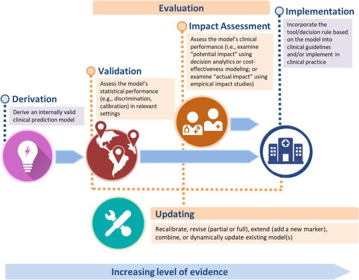

Una paciente de 68 años con ERC G3b y albuminuria A3 pregunta: “Doctor, ¿voy a llegar a diálisis?” Tú necesitas una probabilidad a 2 y 5 años para decidir cuándo derivarla a educación pre-diálisis y planificar el acceso vascular. No te pide saber por qué progresa, sino cuánto riesgo tiene. Eso es predecir.
Lo que vamos a hacer
Distinguir predicción diagnóstica de pronóstica.
Ver con datos simulados cómo la clasificación KDIGO ya es un modelo pronóstico sencillo.
Recorrer el ciclo de vida de un modelo: desarrollo, validación, impacto y actualización.
Paso 1. Diagnóstico vs. pronóstico
Un modelo de predicción clínica estima la probabilidad de un desenlace a partir de varias variables del paciente. Según el tiempo del desenlace:
Diagnóstico: ¿tiene el paciente la condición ahora? Ej.: ¿tiene lesión renal aguda este paciente hospitalizado, según un biomarcador urinario y su creatinina?
Pronóstico: ¿tendrá el desenlace en el futuro? Ej.: la ecuación de riesgo de insuficiencia renal (KFRE, Tangri y col., 2011) combina edad, sexo, TFGe y cociente albúmina/creatinina y estima el riesgo a 2 y 5 años; se compara con un umbral de decisión (derivación, acceso vascular).
Fíjate en lo que no hace: la KFRE no dice que la albuminuria cause la insuficiencia renal ni qué pasaría si se interviene sobre ella. Predice; no explica (lo veremos de nuevo en el Capítulo 2.4).

Marco de evaluación de modelos de predicción: derivación, validación, evaluación de impacto, actualización e implementación (adaptado de Binuya y col., 2022).
Paso 2. Un modelo pronóstico en miniatura: el mapa de riesgo KDIGO
Un ejemplo ya conocido de pronóstico es el mapa de calor KDIGO, que combina la categoría de TFGe (G) y de albuminuria (A) en un riesgo “bajo / moderado / alto / muy alto”. Veamos si ordena el riesgo en la base simuladackd_isglt2:
library(tidyverse)source("R/funciones_epi.R")# categoria_g(), categoria_a(), riesgo_kdigo()source("R/funciones_extra_a.R")# pct()ckd<-read_csv("Bases/ckd_isglt2.csv", show_col_types =FALSE)kdigo<-ckd|>mutate(riesgo =riesgo_kdigo(categoria_g(tfg_basal), categoria_a(uacr)))|>group_by(riesgo)|>summarise(pacientes =n(), evento_36m =mean(evento))# proporción con evento renal a 36 meseskdigo
# A tibble: 4 × 3
riesgo pacientes evento_36m
<ord> <int> <dbl>
1 Bajo 44 0.0455
2 Moderado 517 0.0561
3 Alto 1872 0.107
4 Muy alto 2567 0.208
Qué vemos. El evento renal pasa de 4.5 % en riesgo bajo a 20.8 % en riesgo muy alto: el mapa ordena a los pacientes. Eso es discriminación pronóstica. Pero es un modelo tosco (solo 4 niveles); modelos como la KFRE usan variables continuas y dan una probabilidad concreta para cada paciente.
Paso 3. Qué se le exige a un modelo antes de usarlo
Un buen rendimiento en los datos con que se desarrolló no basta. El ciclo de vida de un modelo incluye cuatro etapas:
Validación: tipos, diseños y medidas (adaptado de Binuya y col., 2022).
Validación interna: ¿el modelo se reproduce en la misma población? Se usa bootstrap o validación cruzada para medir el sobreajuste. Dividir los datos en “entrenamiento” y “prueba” se desaconseja: gasta muestra y da estimaciones imprecisas.
Validación externa: ¿funciona en otro lugar o momento? Puede ser temporal (años posteriores), geográfica (otro hospital o país) o de dominio (otro contexto clínico, la más exigente). Idealmente la hacen investigadores independientes, y la muestra debe ser suficiente (la antigua regla de “100 eventos y 100 no eventos” hoy se reemplaza por calcular la precisión que se necesita).
Evaluación de impacto: ¿mejora las decisiones y los desenlaces? Un modelo con buena discriminación puede ser inútil si no cambia lo que haces. El impacto potencial se estima con medidas de utilidad clínica (beneficio neto) o modelos económicos; el real exige estudios empíricos, idealmente ensayos con y sin el modelo (que son escasos; hay alternativas, ver Janse y col., 2025).
Actualización: reutilizar un modelo existente suele ser mejor que crear otro: recalibrarlo (corregir el nivel de riesgo), revisarlo (reestimar coeficientes), extenderlo (añadir un predictor) o combinarlo con otros.
¿Cómo juzgar el rendimiento? Con tres preguntas:
Discriminación: ¿separa a quienes tendrán el desenlace de quienes no? (estadístico C o AUC).
Calibración: ¿el riesgo predicho coincide con el observado? Si dice 20 %, ¿se observa cerca de 20 %?
Utilidad clínica: ¿mejora las decisiones? (beneficio neto).
Advertencia⚠️ Trampa frecuente: la exactitud diagnóstica es impacto potencial
Calcular la sensibilidad y la especificidad de una prueba solo muestra su impacto potencial, no que los pacientes vayan a estar mejor. Por eso, en las guías de práctica clínica, sensibilidad y especificidad se tratan como desenlaces sustitutos. Y en lugar de seguir creando modelos nuevos, suele ser más útil validar y actualizar los que ya existen.
Importante🎯 En resumen
Etapa
Qué se hace
Pregunta clave
Desarrollo
Construir el modelo
¿Hay suficientes eventos por predictor?
Validación interna
Bootstrap o validación cruzada
¿Hay sobreajuste?
Validación externa
Temporal, geográfica, de dominio
¿Funciona en otro lugar y otro momento?
Evaluación de impacto
Estudios de uso del modelo
¿Mejora las decisiones y los desenlaces?
Actualización
Recalibrar, revisar, extender
¿Sigue siendo válido hoy?
Se reporta con TRIPOD+AI y se evalúa el riesgo de sesgo con PROBAST. Un modelo se juzga por su discriminación, su calibración y su utilidad, no por la “significación” de sus coeficientes.
Ejercicio. (1) ¿La KFRE es una herramienta diagnóstica o pronóstica? (2) Un modelo de riesgo desarrollado en un hospital de Lima se usará en una clínica rural de Cusco: ¿qué tipo de validación necesita antes? (3) Si el modelo predice 10 % de riesgo pero se observa 25 %, ¿falla la discriminación o la calibración?
Referencias
Binuya MAE, Engelhardt EG, Schats W, Schmidt MK, Steyerberg EW. Methodological guidance for the evaluation and updating of clinical prediction models: a systematic review. BMC Med Res Methodol. 2022;22(1):316. https://doi.org/10.1186/s12874-022-01801-8
Janse RJ, Stel VS, Jager KJ, Tripepi G, Zoccali C, Dekker FW, van Diepen M. When impact trials are not feasible: alternatives to study the impact of prediction models on clinical practice. Nephrol Dial Transplant. 2025;40(1):27-33. https://doi.org/10.1093/ndt/gfae170
Tangri N, Stevens LA, Griffith J, et al. A predictive model for progression of chronic kidney disease to kidney failure. JAMA. 2011;305(15):1553-1559.
Hernán MA, Hsu J, Healy B. A second chance to get causal inference right: a classification of data science tasks. CHANCE. 2019;32(1):42-49. https://doi.org/10.1080/09332480.2019.1579578
Nota editorial
Esta sección fue editada con asistencia de IA (ChatGPT; revisión editorial con Claude). Los datos son simulados.